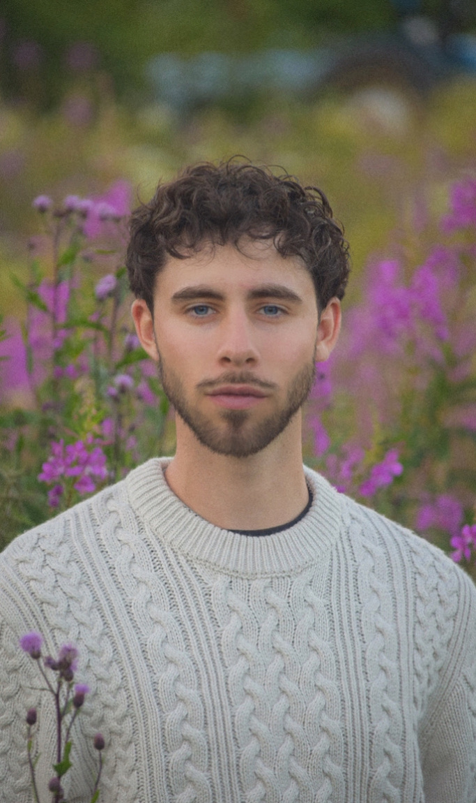

My name is Evan Dayton, I am a Senior at Colorado Christian University. I'm currently studying Political and Computer Science, and I'm deeply passionate about programming and graphic design.
My programming journey has been nothing short of amazing so far, I am extremely satisfied I chose Computer Science as a Minor, and can't wait to see what opportunities arise in the near future. I have links to all of my work and GitHub in the header.
Capturing moments with friends and family or professionally, photography has been a part of my life. Over the years, I've grown a lot as a photographer, with a particular specialty in Adobe Photoshop and Lightroom, where I've spent roughly seven years perfecting my craft.